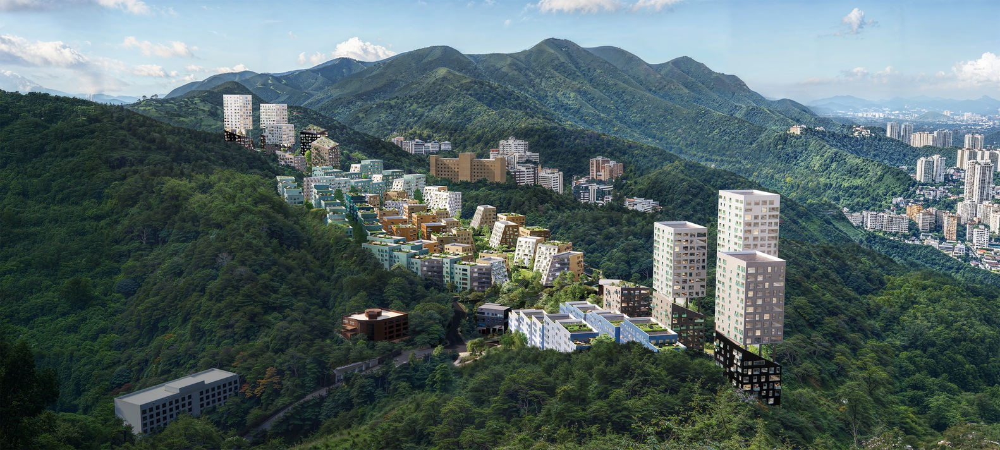

Escrito por Reyyan Dogan | Traducido por Agustina Iñiguez
La construcción ha comenzado en el Campus de Inteligencia Artificial del Parque de Innovación (IPAI) en Heilbronn, Alemania, diseñado por la firma de arquitectura Holandesa MVRDV. Desarrollado por el Konsortium IPAI, que incluye al Estado de Baden-Württemberg, la Fundación Dieter Schwarz, Schwarz Gruppe y la Ciudad de Heilbronn, el campus de 30 hectáreas está concebido como un centro internacional para más de 5,000 profesionales que avanzan en soluciones innovadoras y responsables de IA. Centrado en principios de apertura, colaboración y sostenibilidad, el proyecto busca integrar espacios de trabajo, espacios públicos e instalaciones de investigación, estableciendo un entorno donde la tecnología y la interacción humana coexistan.

Escrito por Reyyan Dogan | Traducido por Agustina Iñiguez
El proyecto Busan Slope Housing de OMA aborda la reurbanización en las empinadas laderas de Busan, Corea del Sur, aprovechando la complejidad topográfica de la ciudad y los patrones históricos de asentamiento. Desarrollado en colaboración con el Festival de Arquitectura de Busan y el Departamento de Vivienda y Arquitectura, el proyecto explora estrategias para repensar los barrios en las laderas, respondiendo tanto a las necesidades de vivienda contemporánea como a los legados sociales y espaciales de estas áreas. En lugar de reemplazar estas zonas con desarrollos convencionales de grandes alturas, OMA imagina un marco flexible y sensible al contexto que integra tipologías de vivienda contemporánea con la estructura heredada del sitio.
Entre el 25 de septiembre y el 5 de octubre de 2025 se desarrolló en Santiago la XXIII Bienal de Arquitectura y Urbanismo de Chile. Bajo el título “DOBLE EXPOSICIÓN: (re)programar · (re)adaptar · (re)construir”, el evento se organizó en torno a la propuesta de “entender la arquitectura no como producción de lo nuevo, sino como capacidad de reactivar lo existente”. Es en base a esta premisa que el equipo curatorial, compuesto por Ángela Carvajal y Sebastián López (Anagramma Arquitectes) junto a Óscar Aceves, concibió un circuito de ocho sedes ubicadas en el centro de la capital chilena. El objetivo fue reactivar y recuperar espacios por medio de actividades gratuitas a las que asistieron alrededor de 70.000 visitantes. Entre los espacios recuperados destaca la ruina de la Iglesia San Francisco de Borja, quemada durante la revuelta social en octubre de 2019, donde se construyó un pabellón que sirvió como sede temporal de conversatorios, lecturas, instalaciones artísticas, charlas, mesas de discusión y actividades comunitarias.